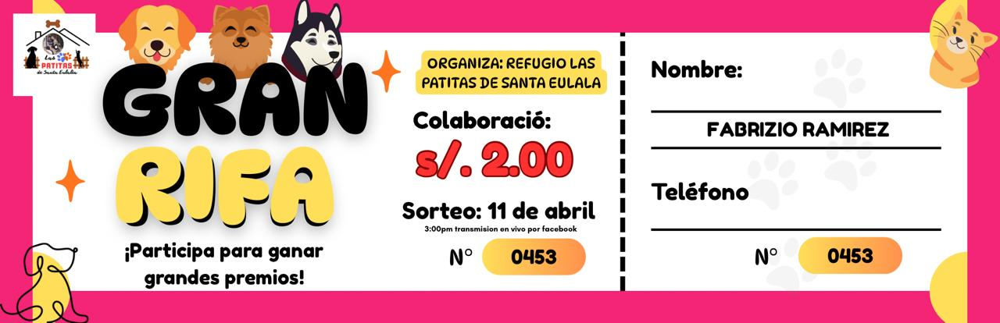

“La grandeza de una nación y su progreso moral pueden ser juzgados por la forma en que se trata a sus animales.”
Experiencia CAS · Marzo · Servicio
Cuestión global y problema local
La cuestión global es el bienestar animal y la responsabilidad de las comunidades frente al abandono. En distintos lugares, los refugios dependen de donaciones para cubrir alimentación, medicinas y atención veterinaria. A nivel local, Patitas de Santa Eulalia enfrenta esa misma dependencia de recursos, por lo que la rifa funcionó como una forma concreta de movilizar apoyo.
Descripción de la experiencia
Apoyé al albergue mediante la compra de 5 tickets para una rifa solidaria destinada a recaudar fondos para los animales rescatados. Además, compartí la iniciativa con mis compañeros para ampliar el alcance de la campaña.
Evidencias

Reflexión personal (Etapas CAS)
Investigación
Identifiqué la necesidad del albergue a través de la difusión de la rifa y entendí que la falta de recursos limita directamente su capacidad de cuidar animales.
Preparación
Decidí cuántos tickets podía comprar y pensé cómo comunicar la campaña a otras personas.
Acción
Compré los 5 tickets y difundí la iniciativa entre mis compañeros.
Demostración
Lo más importante fue comprender que mi compra individual no “resolvía” el problema. Su valor estaba en formar parte de una respuesta colectiva. Eso me hizo cuestionar una idea que tenía al inicio: ayudar no es solamente entregar dinero, sino entender la necesidad, participar de manera informada y, cuando sea posible, involucrarse también con tiempo y presencia.
Por eso, la experiencia me dejó una meta concreta: no limitarme a colaborar económicamente cuando vuelva a encontrar una causa similar. Me gustaría complementar ese apoyo con participación presencial y conocer mejor cómo se utilizan los recursos recaudados para poder evaluar el impacto real.
Resultados de aprendizaje logrados
- RA 4: Mostrar compromiso y perseverancia en las experiencias de CAS.
- RA 5: Mostrar habilidades de trabajo en equipo y reconocer los beneficios del trabajo colaborativo.
- RA 6: Mostrar compromiso con cuestiones de importancia global.